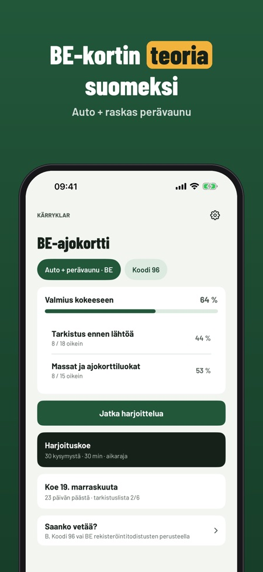
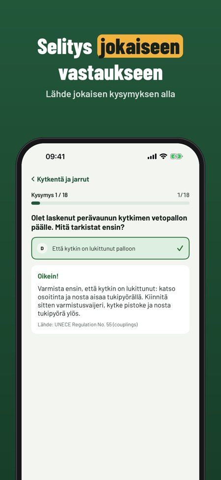
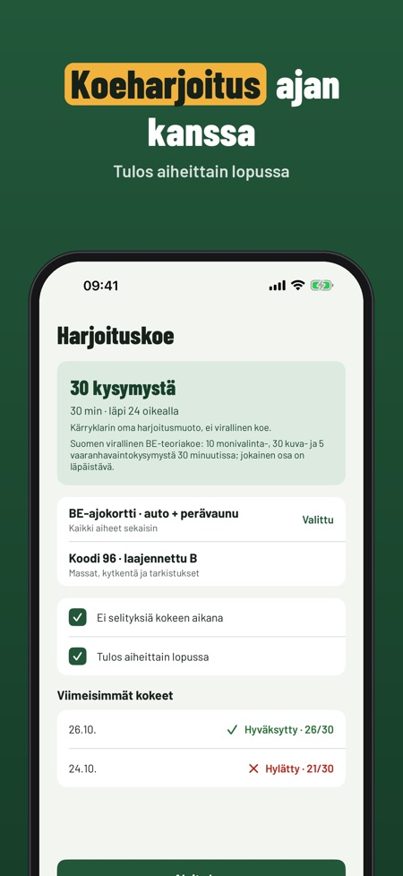

Kärryklar auttaa harjoittelemaan BE-kortin (auto + raskas perävaunu) teoriaa. Se myös laskee rekisteriotteen arvoista, riittääkö B, B96 vai tarvitaanko BE.



Kysymykset aiheittain selityksineen, koeharjoituksen ajan kanssa, Saanko vetää? -laskurin, sanaston, tarkistuslistan ja virheiden kertauksen.
Se laskee rekisteriotteen arvoista, riittääkö B, B96 vai tarvitaanko BE. Tulos on harjoitusapu, joten tarkista aina rekisteriote.
Kyllä, sovellus toimii ilman nettiä.
Saanko vetää? -laskurin, sanaston, tarkistuslistan ja 20 kysymystä.
Ei. Täysi versio on kertaosto, joka avaa kaikki kysymykset, koeharjoitukset ja tilastot.
Ei. Kärryklar on itsenäinen eikä liity Traficomiin, Ajovarmaan tai poliisiin.
Kyllä, sanasto tärkeimmistä käsitteistä.
Kärryklar auttaa harjoittelemaan BE-kortin (auto + raskas perävaunu) teoriaa – ja laskee rekisteriotteen arvoista, riittääkö B, B96 vai tarvitaanko BE.
Saanko vetää? -laskuri, sanasto, tarkistuslista ja 20 kysymystä toimivat ilman ostoa. Täysi versio on kertaosto, joka avaa kaikki kysymykset, koeharjoitukset ja tilastot. Ei tilausta.
Kärryklar on itsenäinen eikä liity Traficomiin, Ajovarmaan tai poliisiin. Laskurin tulos on harjoitusapu – tarkista aina rekisteriote.